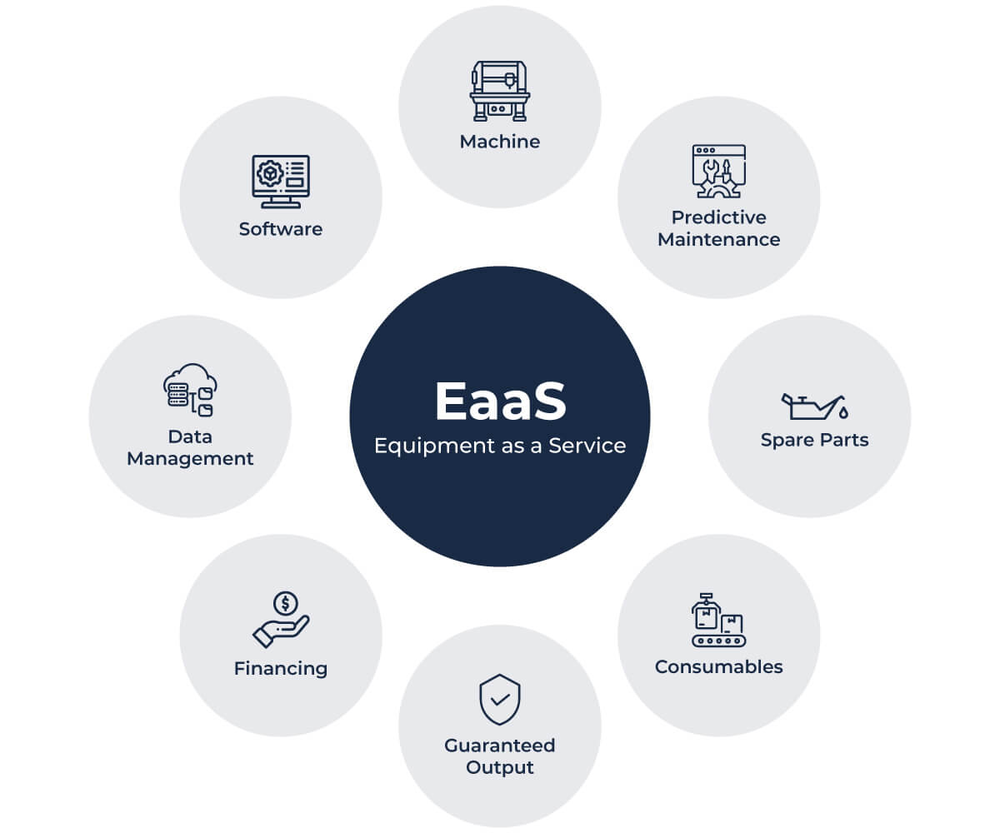
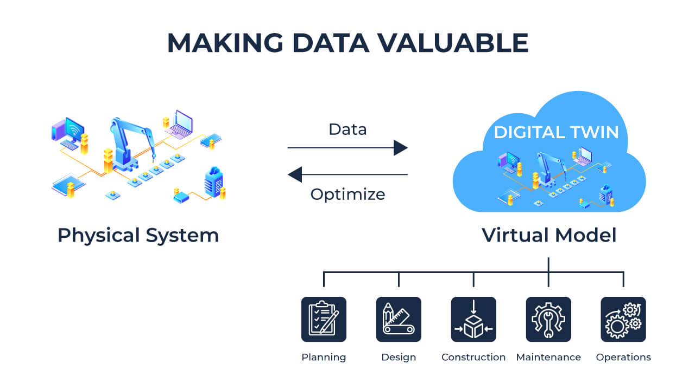

From an over-pressured industry to a completely captivating one, digitalization in Manufacturing has curbed the abilities through major technological inputs and advanced methodologies. We can see that it is all those companies and industries that have adapted to new technologies and methodologies stood among the latest trends.
Meanwhile, it's not to completely overshadow the traditional methods, instead, the industries that can still brag about their traditionality for underlying their abilities to stake and host the best of the trending methodologies. Especially in the manufacturing industry, it was almost a nightmare for entrepreneurs. With increasing demand, storage of workforce, and crucial supply chain adversities, all of this along with the economic conditions prevailed in the economy during the pandemic.
Do you wonder how the digital transformations of the manufacturing industry made a revolutionary impact on the market?
Let us here discover the newly scalable trends in the digitalized manufacturing industry.
1. Digital Technologies Providing Solution To Shortage In the Workforce
One of the main drawbacks limiting production in the manufacturing industry is the lack of skilled labor. Through digital trends, the industry also meets its needs. Major institutes analyzing the market have found that there will be a nearly 2 million shortfall in skilled labor jobs by 2030. And industries are working to meet this, where manufacturing executives are managing to attract a new worker force which is their high-priority task along with retention and reskilling.
Then we have to consider if manufacturers have done good work in promoting their sector. It’s a blunt ‘NO’, there is nothing fancy about working in this sector. Sometimes seen monotonous. Whereas this could actually change! Through automation leaping, manufacturers can change their minds about retirement and voluntary walkouts. And this can also contribute to job replacement by professionals who are data analysts, those in robotics, other tech streams of engineering, and more.
2. Service Lending Equipments Gaining Popularity
The concept of renting a product or machinery has evolved to making payments for the output for its performance relevance, accounting time and usage has been fruitful to all in the branch. The Equipements-As-A-Service (EAAS) market, which was 2 2 billion dollars in 2019, is anticipated to reach the scale of 131 billion dollars in the next 3 years. The EAAS is a highly profitable business delivering reliable revenue streams with multiple opportunities for startups and small businesses to explore by helping them strengthen their base in the initial stages.

3. Skyscraping Cyber Defenses Among Manufacturers
As digital adaptation increases as manufacturers migrate towards the internet for data storage. This has also increased the level of risk for corporate, through data theft, ransomware attacks, and industrial sabotage most organizations in the States have shifted towards phishing their last 12 months of data. This also encouraged entrepreneurs to invest in cybersecurity prevention. The legacy system replacement and technology are seen as the solution standing up to security threats along with improvements in terms of security in remote work.
4. Expanding Production As Utilization Increases
Customization is the key for businesses. Today every business is focusing on customization to meet personal requirements. It's becoming common among the millennials and GenZ to have things personal about their belongings. Digitalization in manufacturing has not transferred the selling point in the products and brought new strategies to captivate the interests. In that case, customizations on a large scale have empowered the industry.
Through one visual product configurator, it has been easy to demonstrate various sets of alterations and their results. This acts as an added edge for buyers and manufacturers to interact and communicate about their requirements and design the exact solution. Here it requires no experience with the market or the product.
Moreover, in history, additive manufacturing with 3D printers has made single-unit productions run profitably. ThreeD printers have been considerably economical and less expensive than traditional methodologies. This helps in decentralizing and localizing production. This also benefits in lowering the cost of post-production.
5. Digital Threads Connecting Lifecycle Of The Products
From formulating the idea, conceptualizing it, engineering the structure, marketing, sales, delivery, and also disposal are all put in the Digital Thread. This helps the digital manufacturers to analyze the product at every stage and helps in adding valuable insights for the following product cycle. Here continuous data streamlining plays a vital role.
The intrusion of Digital trends in manufacturing industries creates visibility while the business users in all the departments are benefited. As a whole, every operationist can get an overall view of the business, and planning accordingly through a centralized dashboard makes it easy to track and associate. Moreover, the loops between the market and manufacturers easily coincided with the end-to-end flow of work.
6. Digitalized Twinning Networks Showcasing the future of Digital Manufactures

With the help of digital twins in the business, it makes it easy for digital manufacturers to create virtual replications of physical assets. And not stop with just it, they also get to explore its personality traits, and behaviors over usage, especially during hectic scenarios. Through real time mirroring manufacturers can sketch the complete use case of the product and its performance in different situations that are ranging from complicated, complex, and new avenues giving the accurate pre-result over experiments.
Moreover, this gives almost realistic situations and solutions to work on for better outcomes. To simplify, these digital twins are carbon copies of the system and product, helping manufacturers identify its possibilities and limitations to build a steady structure binding to fulfill the expectations of the network through a digitally built ecosystem on the internet that may result in unexpected improvements in efficiency and performance.
7. Augmented Intelligence bringing Powered Machines Meeting Human Capabilities
It is an undeniable fact that it's even hard for the chess grand-master when their opponents are computerized. This is because it is empowered by AI technologies. But in the case of a hybrid model, where computers team up with humans, that is going to be a deadly combination. Moreover, it is noticed that digitalization in manufacturing hit its market audience similarly.
Augmented intelligence paired with humans meeting their ideologies, can drive to yield better results and also enhance in terms of productivity. Mostly every manufacturer, which includes both leading and startups infuses AI in usage to understand the customer patterns and worker capability to meet the requirements. With this planning can be easily done to schedule manufacturing activities and meet the needs. Moreover, for creative solutions, problem-solving spaces, and social collaboration, AI is used for better accomplishments.
8. Predictive Maintenance with Collaborative Robots
IoT manufacturing renders sumptuous advantages starting from operating remotely and monitoring maintenance, dealing the crucial cost-cutting through devising performance metrics, monitoring performance from far, automating the data collection process, cutting down unexpected outages, improving machinery life by years, and much more contributing to exemplary
Meanwhile, cobots are collaborative robots designed to work completely closely with human counterparts to solve solutions and focus on real-time problems in the market. This is also moreover enhanced through creative approaches increasing versatility, and a variety of functionality breaking the barriers in the name of limitations.
9. Replacing Supply Chain With Digitizing Solution
The scaling demand along with the cost spiraling up for raw materials brings a cut in the raw material distribution. And there are other factors like shortage of drivers, increased wages, etc. that make it fragile for a manufacturer to increase their supply chain and visibility in such crucial situations.
As a solution, digital manufacturers can come closer to centralization, combining, data interchanging, enclosing production lines, and implying sensors with the help of digital integration initiatives can vastly contribute to business efficiency, cost reductions, and logistic enhancement management, that therefore smoothens the discomfort in the business.
10. Environmental Goals Merging Into Digital Solutions For Sustainability
To hit sustainable development and target more on the moral and financial obligations of the manufacturers. As the governments are strict on polluters, implementing strict regulations and incentivizing green manufacturing make it more strict and generous simultaneously. Sustainability has been the major expectation that is to be fulfilled by the manufacturer and suppliers.
The giants fulfilling these needs of the customer, being beneficial for investors, and encouraging to employees continued to shine in their position. Moreover, this digital transformation with sustainability is seen as a Twin Transformer that is designed to benefit the manufacturers in terms of cost reduction particularly, lowering wastage, improving customization, and much more.
Digital Transformation of Manufacturing Industries Is Trending!
This state by any means cannot be denied as the industry as a whole has seen a lot of positive transformations with digitalization. Moreover, it has found the solution to the traditional issues that have been passed on over the generations in the manufacturing industry. And digitalization is not a sudden shift, it also had its tough phase in coping with the needs of the market. But now it has evolved to be positive in many sectors. And in that row Digitalization in manufacturing is going to evolve to make tremendous wonders without any doubt.
Lead Project Manager
Sivabharathy is a technical architect, technology enthusiast, and voracious reader. His visionary perspective has earned him opportunities to work with innovative projects in the computer software industry. He is an expert in PHP, JavaScript, NodeJS, Angular, Ethereum, Web3, Product Development, and Teamwork.